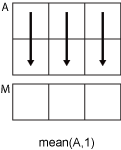
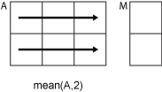

mean
Average or mean value of array
Syntax
Description
M = mean( returns the mean of the elements of
A)A along the first array dimension whose size does not equal
1.
If
Ais a vector, thenmean(A)returns the mean of the elements.If
Ais a matrix, thenmean(A)returns a row vector containing the mean of each column.If
Ais a multidimensional array, thenmean(A)operates along the first array dimension whose size does not equal 1, treating the elements as vectors. The size ofMin this dimension becomes1, while the sizes of all other dimensions remain the same as inA.If
Ais a table or timetable, thenmean(A)returns a one-row table containing the mean of each variable. (since R2023a)
M = mean(___, returns the mean with a
specified data type for any of the previous syntaxes. outtype)outtype can be
"default", "double", or "native".
M = mean(___, specifies whether to
include or omit missing values in missingflag)A. For example,
mean(A,"omitmissing") ignores all missing values when computing the mean. By
default, mean includes missing values.
M = mean(___,Weights= specifies a weighting
scheme W)W and returns the weighted mean. (since R2024a)
Examples
Input Arguments
Input data, specified as a vector, matrix, multidimensional array, table, or timetable.
If
Ais a scalar, thenmean(A)returnsA.If
Ais an empty 0-by-0 matrix, thenmean(A)returnsNaN.
Data Types: single | double | int8 | int16 | int32 | int64 | uint8 | uint16 | uint32 | uint64 | logical | datetime | duration | table | timetable
Dimension to operate along, specified as a positive integer scalar. If you do not specify the dimension, then the default is the first array dimension whose size does not equal 1.
Dimension dim indicates the dimension whose
length reduces to 1. The size(M,dim) is 1,
while the sizes of all other dimensions remain the same.
Consider an m-by-n input matrix,
A:
mean(A,1)computes the mean of the elements in each column ofAand returns a1-by-nrow vector.
mean(A,2)computes the mean of the elements in each row ofAand returns anm-by-1column vector.
mean returns A when dim is
greater than ndims(A) or when size(A,dim) is 1.
Vector of dimensions, specified as a vector of positive integers. Each element represents a dimension of the input data. The lengths of the output in the specified operating dimensions are 1, while the others remain the same.
Consider a 2-by-3-by-3 input data, A. Then mean(A,[1 2])
returns a 1-by-1-by-3 array whose elements are the means over each page of
A.

Output data type, specified as one of the values in this table. These options also specify the data type in which the operation is performed.
outtype | Output data type |
|---|---|
"default" | double, unless the input data type is single,
duration,
datetime, table, or
timetable, in which case, the output
is "native" |
"double" | double, unless the data input type is duration,
datetime, table,
or timetable, in which case,
"double" is not supported |
"native" | Same data type as the input, unless:
|
Missing value condition, specified as one of the values in this table.
| Value | Input Data Type | Description |
|---|---|---|
"includemissing" | All supported data types | Include missing values in
|
"includenan" | double, single,
duration | |
"includenat" | datetime | |
"omitmissing" | All supported data types | Ignore missing values in
A, and compute the mean over fewer
points. If all elements in the operating dimension are
missing, then the corresponding element in
M is missing. |
"omitnan" | double, single,
duration | |
"omitnat" | datetime |
Since R2024a
Weighting scheme, specified as a vector, matrix, or multidimensional array. The elements of
W must be nonnegative.
If you specify a weighting scheme, mean returns the weighted mean, which
is useful when values in the input data have different levels of importance or the input data is
skewed.
If W is a vector, it must have the same length as the operating dimension.
Otherwise, W must have the same size as the input data.
If the input data A is a table or timetable, then
W must be a vector.
You cannot specify this argument if you specify vecdim or
"all".
Data Types: double | single